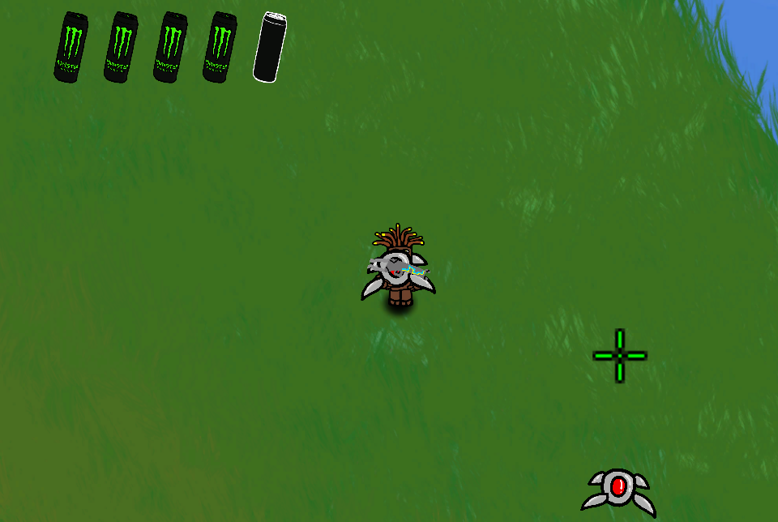

(reading time: few seconds to check if its working)
Introduction
For most of my young childhood I had the side dream of creating video games. If playing video games was fun, surely learning how to program would be equally fun. Luckily for me, my basic computer learning class in elementary school gave me the oppurtunity to learn and create games, I was just waiting to create all sorts of fun ideas.
This excitement was crushed instantly.
According to the block coding tutorial, coding was this.
In the eyes of a 7 year old, programming was shown to just be random ways to add numbers together, how to check if one number was greather than another, or checking if someone presses a button.
As you would expect I gave up on the dream as it was too boring.
The time is now middle school 7th grade, I've had a basic foundation in how to google and figure things out myself. I recently found that lots of game developers online manage to learn programming themself, so naturally I decided that maybe the real programming is by using the big official tools like the unity game engine to create.
With this new found excitement I bought a course online to create a video game and chipped away at it over the course of a year.
This time, I learned that actually programming is nearly impossible for anyone to learn and I would need a degree in computer science to truly know how to program.
Throughout the course, the extent of creating a game involved me watching the video for 5 seconds, then copying down the code that the person played not knowing what I was doing at all. By the end of the course I succesfully created a game without knowing what anything said or meant in my code. It was the opposite of my original experience in programming. 
Once again I gave up on this hope of creating my own game.
My final experience in starting programming
: Works Cited
Beilock, Sian L., and Daniel T. Willingham. “Ask the Cognitive Scientist.” Math Anxiety: Can Teachers Help Students Reduce It?, vol. 38, no. American Educator, 2014, pp. 28-32. Math Anxiety: Can Teachers Help Students Reduce It? Ask the Cognitive Scientist, https://files.eric.ed.gov/fulltext/EJ1043398.pdf. Accessed 16 3 2024.
Boaler, Jo. “Fluency Without Fear.” YouCubed, 28 01 2015, https://www.youcubed.org/evidence/fluency-without-fear/. Accessed 16 March 2024.
Case, Nicky. “Curse of the Chocolate-Covered Broccoli (or: Emotion in Learning).” Nicky's Blog, 5 December 2019, https://blog.ncase.me/curse-of-the-chocolate-covered-broccoli-or-emotion-in-learning/. Accessed 16 March 2024.
Gonzalez, Jennifer. “Frickin' Packets.” Cult of Pedagogy, 26 March 2018, https://www.cultofpedagogy.com/busysheets/. Accessed 8 April 2024.
"I need a counterclaim from a hostile audience for the following
claim: (claim) Students should be able to use AI software because they will need to use it in their future careers." prompt. ChatGPT, ChatGPT 3.5, OpenAI, 6 Feb. 2024, chat.openai.com/chat.
"I need a counterclaim from a hostile audience for the following
claim: (claim) Students should be able to use AI software because they will need to use it in their future careers." prompt. ChatGPT, ChatGPT 3.5, OpenAI, 6 Feb. 2024, chat.openai.com/chat.
"I need a counterclaim from a hostile audience for the following
claim: (claim) Students should be able to use AI software because they will need to use it in their future careers." prompt. ChatGPT, ChatGPT 3.5, OpenAI, 6 Feb. 2024, chat.openai.com/chat.
"I need a counterclaim from a hostile audience for the following
claim: (claim) Students should be able to use AI software because they will need to use it in their future careers." prompt. ChatGPT, ChatGPT 3.5, OpenAI, 6 Feb. 2024, chat.openai.com/chat.
"I need a counterclaim from a neutral audience for the following
claim: (claim) Students should be able to use AI software because they will need to use it in their future careers." prompt. ChatGPT, ChatGPT 3.5, OpenAI, 6 Feb. 2024, chat.openai.com/chat.
"I need a counterclaim from a neutral audience for the following
claim: (claim) Students should be able to use AI software because they will need to use it in their future careers." prompt. ChatGPT, ChatGPT 3.5, OpenAI, 6 Feb. 2024, chat.openai.com/chat.
"I need a counterclaim from a neutral audience for the following
claim: (claim) Students should be able to use AI software because they will need to use it in their future careers." prompt. ChatGPT, ChatGPT 3.5, OpenAI, 6 Feb. 2024, chat.openai.com/chat.
"I need a counterclaim from a neutral audience for the following
claim: (claim) Students should be able to use AI software because they will need to use it in their future careers." prompt. ChatGPT, ChatGPT 3.5, OpenAI, 6 Feb. 2024, chat.openai.com/chat.
Meyer, Dan. “If Math Is The Aspirin, Then How Do You Create The Headache?” dy/dan, 17 June 2015, https://blog.mrmeyer.com/2015/if-math-is-the-aspirin-then-how-do-you-create-the-headache/. Accessed 16 March 2024.
Kartak, Amanda. Real World Reboot: Multimodality. 2022. Saint Mary's University of Minnesota, Masters of Education in Teaching and Learning.
Sanderson, Grant. When do programmatic visuals help in understanding math? 14 Oct 2021. youtube, https://www.youtube.com/watch?v=gvck7ssg9dE.
Shoenfeld, Alan H. “When Good Teaching Leads to Bad Results: The Disasters of "Well Taught" Mathematics Courses.” Educational Psychologist, vol. 23, no. 2, 1988, p. 22. researchgate, https://www.researchgate.net/profile/Alan-Schoenfeld-2/publication/239027194_When_Good_Teaching_Leads_to_Bad_Results_The_Disasters_of_%27Well-Taught%27_Mathematics_Courses/links/02e7e528dae5f8984d000000/When-Good-Teaching-Leads-to-Bad-Results-The-Disasters.